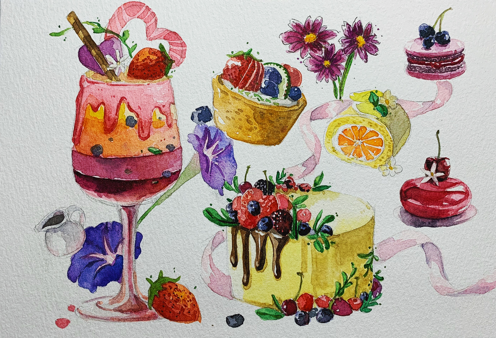
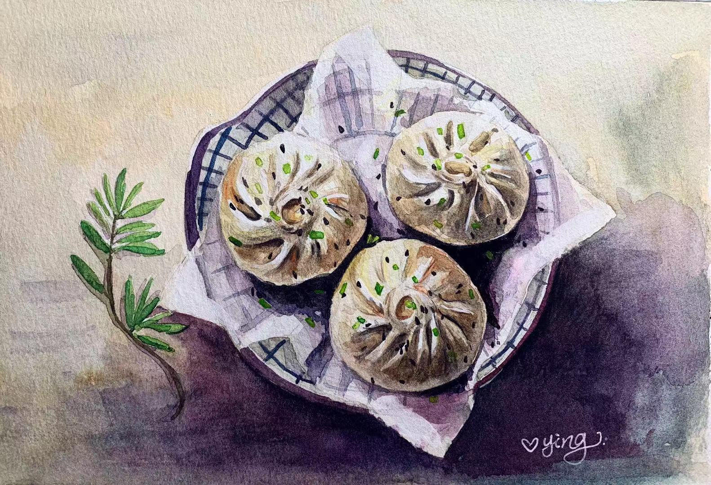

food illustration
It is a series all about food and drinks. A beautiful food can easily provoke the appetite. Meanwhile, a beautiful food painting can delight the mood. It took me a while to figure out what is the best way to arrange the composition and color. The biggest challenge is to separate the color in the same color spectrum.






Buns Process
The process images shows how I paint the juicy buns in watercolor. Painting watercolor can makes me calm down because it is a slow job. It requires artists take time, slowly and carefully paint it again and again in order to showcase its unique texture. It deserves people to look at it closer and find out more interesting details.